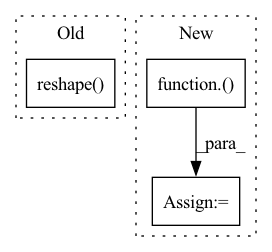

Pattern ID :8011
Before Change
Vc = V.conj().T
p = Vc @ p
q = Vc @ q.conj()
B = Vc @ np.sqrt(1. + 2 * np.arange(N)).reshape( N, 1)
Ct = lecun_normal(
dtype=np.complex64 // FAILS if uncomment
)(rng, (1, N))
Ab, Bb, Cb = discrete_DPLR(Lambda, p, q, B, Ct, step, L)After Change
Vc = V.conj().T
p = Vc @ p
q = Vc @ q.conj()
B = lecun_normal(
dtype=np.complex64 // FAILS if uncomment
)( rng, (N, 1))
B = Vc @ B
Ct = lecun_normal(
dtype=np.complex64 // FAILS if uncomment
)(rng, (1, N))In pattern: SUPERPATTERN
Frequency: 3
Non-data size: 3
Instances Fragment ID: 28456592
Project Name: srush/annotated-s4
Commit Name: 9a19f64eaa50a84b2b7c7f45eee2f2cc57c47ed8
Time: 2022-02-25
Author: srush.research@gmail.com
File Name: s4/s4.py
M Class Name: AnonimousClass
N Class Name: AnonimousClass
M Method Name: test_conversion(2)
N Method Name: test_conversion(2)
M Parent Class:
N Parent Class:
M File Name: s4/s4.py
N File Name: s4/s4.py
M Start Line: 958
M End Line: 1008
N Start Line: 972
N End Line: 1029
Before Change
// position_embeddings = position_embeddings.view(my_shape)
position_embeddings = torch.take_along_dim(embeddings_table, final_mat.flatten().unsqueeze(1), dim=0)
position_embeddings = position_embeddings.reshape( *final_mat.shape, embeddings_table.shape[-1]) // [seq_len, seq_len, hdsz]
self.register_buffer("position_embeddings", position_embeddings)
// self.post = nn.Embedding.from_pretrained(position_embeddings, freeze=True)
After Change
// self.register_buffer("position_embeddings", position_embeddings)
// 实现方式3
position_embeddings = nn.Embedding.from_pretrained(embeddings_table, freeze=True)( final_mat)
self.register_buffer("position_embeddings", position_embeddings)
def forward(self, qlen, klen):
return self.position_embeddings[:qlen, :klen, :] Fragment ID: 28456587
Project Name: tongjilibo/bert4torch
Commit Name: a2b2e99808769f4b3713f554a41a7d88a45ebfde
Time: 2022-03-19
Author: tongjilibo@163.com
File Name: bert4torch/layers.py
M Class Name: RelativePositionsEncoding
N Class Name: RelativePositionsEncoding
M Method Name: __init__(5)
N Method Name: __init__(4)
M Parent Class: nn.Module
N Parent Class: nn.Module
M File Name: bert4torch/layers.py
N File Name: bert4torch/layers.py
M Start Line: 323
M End Line: 340
N Start Line: 357
N End Line: 382
Before Change
@nn.compact
def __call__(self, x):
x = x.reshape( (x.shape[0], -1)) // flatten
for _ in range(2):
x = nn.Dense(features=100)(x)
x = nn.relu(x)After Change
def __call__(self, x):
for sz in self.hidden_sizes:
x = nn.relu(nn.Dense(sz)(x))
x = nn.Dense(self.output_size)( x)
return x
def cross_entropy_loss(*, logits, labels): Fragment ID: 28456588
Project Name: google/uncertainty-baselines
Commit Name: cb581a303749fa4e7f1a19422109627b3a6d61ea
Time: 2022-08-13
Author: no-reply@google.com
File Name: experimental/shoshin/training.py
M Class Name: MLP
N Class Name: MLP
M Method Name: __call__(2)
N Method Name: __call__(2)
M Parent Class: nn.Module
N Parent Class: nn.Module
M File Name: experimental/shoshin/training.py
N File Name: experimental/shoshin/training.py
M Start Line: 39
M End Line: 43
N Start Line: 42
N End Line: 44